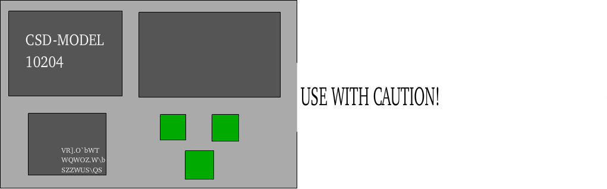

About CSD
The CSD/Comic Sans Destroyer is a microchip with a needle, using this needle you inject it into either of your temples, it'll work automatically and it'll enhance your eyes to never see Comic Sans! It's incredibly risk and pain free that anyone can apply it by themselves without assistance. We developed this product as we know the dangers that Comic Sans poses to the Typography industry and our hard workers at Funfont have been creating the CSD with failures for so long, but now it's for all of you to enjoy! |
 |